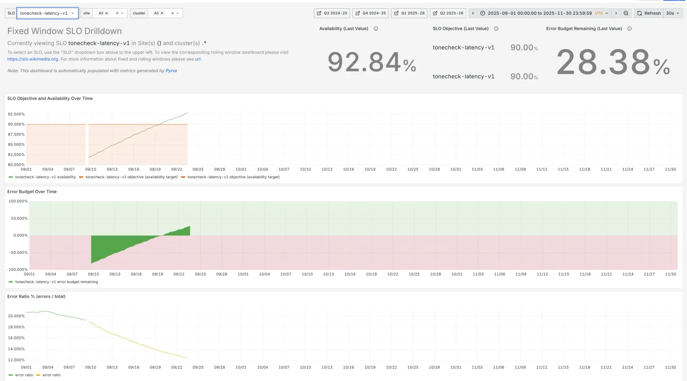

This page owns observability in general. LLM-specific signals (time to first token, tokens per second, KV cache, cost per request) are on the sibling ML system design (section 7); traces of model calls and agent runs and the OpenTelemetry GenAI conventions on LLM observability; GPU counters, DCGM, goodput and GPU-hour accounting on Observability and cost; SLO definitions, error budgets as policy and incident response on Reliability engineering.
The idea in one sentence. Count every request into a histogram (metrics), follow a sample of requests across services (traces), write one structured line per event (logs), tie the three together with one trace ID, and page a human only when users' error budget is burning fast.
Fig. 1 follows one slow request, recorded three ways, joined by one ID: a real request from the demo's incident, POST /v1/chat, trace ID abb786234a7345e9a0ff1bb9fd531735, 1,497 ms where a normal one takes about 320 ms, status 200 (so no error counter saw it). Every timing, count and line in the figure is from that request; the layout is a schematic.
POST /v1/chat to chat-api, which checks auth (3 ms) and loads the conversation from SQLite (0.5 ms). The clock above chat-api replays the trace's own timings.traceparent header (the large dot); retrieval sent the lookup to replica r3-cold, the cold one, where it took 910 ms.{"ts":"19:37:32.140Z", "level":"INFO", "service":"chat-api", "msg":"request served", "trace_id":"abb78623...", "status":200, "duration_ms":1496.7}. It says the request was slow but not why. Cost: per gigabyte stored and per line indexed.You need: nothing beyond running an HTTP service. The parent root's Step 4 is the two-paragraph version of this page.
Monitoring answers questions decided in advance: is the error rate above 1%, is the disk 90% full? Google's SRE book defines it as "collecting, processing, aggregating, and displaying real-time quantitative data about a system, such as query counts and types, error counts and types, processing times, and server lifetimes" (SRE book, ch. 6). Production keeps producing failures nobody predicted (one replica with a cold cache, one tenant whose documents are huge), and for those you need observability: "the ability to investigate a system by asking any question about its behavior without needing to predict those questions in advance" (Honeycomb, What is observability): slice requests by any field, follow one request across services, without new code and a redeploy first.
Fixed questions: dashboards and alert rules over a few metrics. Cheap, fast, reliable. Tells you that something is wrong.
Open questions, asked after the fact, by route, tenant, replica, model version. Tells you where and why. Costs more data.
A second line from the SRE book runs through this page. Black-box monitoring is "testing externally visible behavior as a user would see it": it shows symptoms happening now. White-box monitoring is "based on metrics exposed by the internals of the system, including logs": it shows causes, and can warn before users notice. Page humans on the first; debug with the second (section 15).
The running example, instrumented for real. The parent topic's chat assistant, built small on a laptop and broken on purpose on 2026-10-04 (code in src/demo/):
/metrics on both every secondThe incident. 90 seconds normal, 90 seconds of incident, 45 seconds of recovery. During the incident one retrieval replica went cold: 15% of retrieval calls took 900 ms and 2% hung for 1.5 s, past chat-api's 1-second timeout, so those requests failed with HTTP 503. The model call and the database were unchanged. One dependency, some of the time, for some users: the classic shape of a real slowdown, debugged twice in section 13. The incident shape is chosen; its numbers are measured. All of it is browsable in the Real telemetry tab.
Versions: Python 3.12.11, opentelemetry-sdk 1.45.0 (released 2026-09-25), prometheus-client 0.26.0 (2026-07-24), Prometheus 3.15.0 (2026-09-25). The word observability comes from control theory, where a system is observable if its internal state can be worked out from its outputs.
Observability is a second data system beside your product: code to emit the data (about 96 microseconds of CPU per request in our measurement, section 12), pipelines, storage and people. The SRE book notes that a Google SRE team of 10 to 12 "typically has one or sometimes two members whose primary assignment is to build and maintain monitoring systems".
Three outages from the parent root's Case files tab: "73 hours down: the service directory everything depends on choked" (Roblox, 2021: the monitoring depended on the system that failed, so keep it outside); "A monitoring tool overloaded the cluster brains, and DNS went with them" (OpenAI, December 2024: a new telemetry agent on every node made expensive Kubernetes API calls that overloaded the control plane); and "Three serving bugs quietly made Claude's answers worse" (Anthropic, 2025), a failure no error counter sees.
A log is a timestamped record of one event. A line of text such as 2026-10-04 19:36:42 request failed for user7 after 1014ms reads well, but a machine has to guess where the user name ends, and at 10 million messages a day (the parent root's estimate) nobody reads lines; you query them. So write structured logs: one JSON object per line, with named fields. A real line from the demo, written by the incident's first failed request, is on the right.
Now level="ERROR" and route="/v1/chat" is a filter and the average duration_ms by status is a query. Three fields do most of the work:
X-Request-Id header (a common convention, not a standard), so a support ticket can be matched to your logs.JsonFormatter reads them from the current OpenTelemetry span, so no handler code passes them around.Logs are copied to agents, storage, backups and laptops, and read by many people, so a secret in a log is a leaked secret. OWASP lists what "should usually not be recorded directly in the logs, but instead should be removed, masked, sanitized, hashed, or encrypted": session identifiers, access tokens, passwords, database connection strings, encryption keys, payment card data and sensitive personal data (OWASP Logging Cheat Sheet). For the chat product: never log prompts or replies by default (customer data; retention is on ML system design section 7), API keys or bearer tokens. The demo deliberately passes an email and an Authorization header to the logger, and a redaction filter in the formatter masks them:
Treat the filter as a seatbelt, not the plan: a filter only catches the patterns it knows, so the plan is not to pass secrets to the logger at all.
The program writes JSON lines to standard output; an agent on each machine (Fluent Bit, Vector or the OpenTelemetry Collector) adds the host and pod and ships them to a store. A full-text index (Elasticsearch, OpenSearch, Datadog's indexed logs) makes any word searchable in milliseconds and charges for the index; labels only (Grafana Loki: "Loki does not index the contents of the logs, but only indexes metadata about your logs as a set of labels for each log stream", Loki overview) scans compressed lines at query time: cheaper to keep, slower to search widely.
Measured: chat-api's lines average bytes, retrieval's ; one message makes one line in each. At 10 million messages a day that is GB a day, GB per 30 days. At Datadog's list prices on 2026-10-04 ($0.10 per ingested GB and $1.70 per million log events indexed with 15-day retention, annual billing, Datadog pricing), ingesting costs about a month but indexing lines costs about . DEBUG at 20 lines per request (illustrative) makes the indexing line ten times larger. The usual answers: index only WARNING and above, keep INFO in cheap archive storage, sample repetitive success lines, and count with metrics, not logs.
14 consecutive chat-api lines from the real incident, around the first failure, are on the right (time, level, service, message, status, duration, start of the trace ID).
The error line is obvious. What the stream does not show is that one request in seven is about 900 ms slower than normal, because those succeed and log "request served" like every other. Logs answer "what happened to this request"; they are bad at "what is happening to all requests". That is the job of metrics.
A metric is a number the program keeps up to date in memory ("requests handled so far"). A monitoring system reads it every few seconds and stores each reading, giving a time series of (time, value) pairs. The program only updates a number per request (we measured 0.8 to 1 microsecond per update), so metrics are the cheapest way to see all requests at any traffic. Prometheus, the open-source system most teams start with, pulls: each program serves its numbers as text at /metrics, and Prometheus scrapes that page on a timer (default 1 minute, Prometheus configuration; the demo used 1 second). Part of chat-api's real /metrics page at the end of the run is on the right.
Each line is name{labels} value; every distinct combination of name and labels is its own time series. The four types (Prometheus metric types):
| Type | What it is | In the demo | How you read it |
|---|---|---|---|
| Counter | "a cumulative metric that represents a single monotonically increasing counter whose value can only increase or be reset to zero on restart" | http_requests_total{status="503"} 12 | Never the raw value: its rate per second over a window with rate(), which also handles restarts |
| Gauge | "a single numerical value that can arbitrarily go up and down" | http_requests_in_flight | Directly: memory in use, queue length |
| Histogram | Counts of observations in buckets (upper bounds le, "less than or equal"), each cumulative, plus _sum and _count | http_request_duration_seconds_bucket{le="0.5"} 1956: 1,956 requests took 0.5 s or less | Percentiles with histogram_quantile() on the server; can be summed across machines |
| Summary | Percentiles computed inside the program | not used | "not aggregatable": the p99s of ten servers do not combine into the fleet's p99 (Prometheus histograms and summaries). Prefer histograms. |
Naming: base units (seconds and bytes, not milliseconds), a unit suffix (_seconds), _total on counters (Prometheus naming); our counter is declared as http_requests and the client library adds _total.
Latency varies from request to request, so one number must summarise a distribution. A percentile does it honestly: p99 is the latency 99% of requests beat (the slowest 1 in 100), p50 the median. The average does not: "If you run a web service with an average latency of 100 ms at 1,000 requests per second, 1% of requests might easily take 5 seconds" (SRE book, ch. 6). Predict: in our incident, 15% of retrieval calls became 900 ms slower. How much did the median move? Then toggle the figure on the right (exact values from the load generator's record of every request, last 60 seconds of each phase).
The average rose by about a third and suggests every user got a bit slower. In fact the median barely moved while the slowest requests became about 2.5 times slower: most users saw nothing, some waited a second longer, and about 2% got an error (12 requests over the whole incident). Fan-out makes the tail matter more: "the 99th percentile of one backend can easily become the median response of your frontend" (SRE book), because a page that calls 100 backends almost always hits one slow one.
A dashboard that shows the fleet's p99 as the mean of each server's p99 reports a number no request had. Real case: the three retrieval replicas during the incident.
The fix is to combine the raw counts, then take the percentile: sum the histogram buckets across servers (sum by (le)), then histogram_quantile. That is why histograms beat summaries: a summary has only the per-server percentiles left.
Mean of the three p99s: 527.2 ms, a latency no lookup was near (r1 and r2 under 37 ms, r3-cold all over 500 ms). The true p99 of all 701 lookups is at least 909.7 ms: the slowest 1% (8 lookups) all came from r3-cold, whose median alone is 909.7 ms. Derived in src/avgpct.py from the replica statistics; per-lookup times were not kept, so the pooled value is a bound.
Prometheus never sees individual requests, only bucket counts. histogram_quantile(0.99, ...) computes the rank (0.99 times the total count), finds the bucket holding that rank, and assumes the requests inside it are spread evenly between its bounds (linear interpolation, PromQL functions). The bars on the right are the real bucket counts from the incident's last minute; move the slider.
At φ = 0.99 the estimate is 1.4619 s, exactly Prometheus's own answer, against an exact 1.306 s. "Error is limited by the width of the bucket the quantile is located in" (Prometheus histograms), so put bucket boundaries at the numbers you care about: if the target is "first token within 2 s", have a boundary at 2. The SRE book suggests boundaries roughly a factor of 3 apart (10 ms, 30 ms, 100 ms, 300 ms). The newer fix is the native histogram: exponentially spaced buckets chosen automatically at high resolution and stored as one series; OpenTelemetry's equivalent is the exponential histogram.
Experimental from Prometheus 2.40 (November 2022) and "supported as a stable feature" from v3.8.0, though scraping them must still be switched on with scrape_native_histograms (native histograms spec).
Four pieces cover most daily use: a selector picks series by name and labels (http_requests_total{job="chat-api",status=~"5.."}, =~ being a regular-expression match), a range takes the last N seconds of samples ([1m]), rate() turns a counter into a per-second rate, and sum by (label) adds series, keeping only the labels named. The real queries against the demo's Prometheus, with the real answers at the end of each phase (60-second windows):
| Question | PromQL | Normal | Incident |
|---|
Two habits: divide after summing (sum the rates of errors and of all requests, then divide; never average ratios), and always sum by (le) before histogram_quantile. The dependency row shows interpolation going wrong: the true retrieval p99 was about 1.0 s (the timeout), but the nearest bucket edges were 1 and 2.5 s, so the estimate landed at 1.7 s. Frequently used queries are precomputed by recording rules, which is how the alert rules in section 15 stay cheap.
Cardinality is the number of distinct time series. Prometheus: "every unique combination of key-value label pairs represents a new time series, which can dramatically increase the amount of data stored. Do not use labels to store dimensions with high cardinality (many different label values), such as user IDs, email addresses, or other unbounded sets of values" (Prometheus naming). The multiplication is easy to underestimate, because a histogram is already many series per combination. Fig. 3 draws one cube per series for one latency histogram, with the calculator's defaults below:
_sum and _count: 12 series before any label is added.Predict the series count for your own service, then press a label: the sliders and buttons use the same formula.
The rule that follows: labels for things with a few known values (route template, status class, region, model name); high-cardinality detail (user, tenant, request ID, prompt length) goes on spans and log lines, which are priced per event, not per combination. Honeycomb's event store is built for that side of the trade: high-cardinality fields "pinpoint the specific components, transactions, or users affected" (Honeycomb). Use the route template (/v1/chats/{id}), never the raw path; OpenTelemetry's HTTP conventions require http.route to "be low-cardinality" (OTel HTTP spans).
series = (buckets + 2) × routes × status codes × instances × extra label values (the +2 are _sum and _count); defaults give 2,400. Samples per second = series / 15 s scrape interval. Disk = samples × 86,400 × 1.5 bytes, the middle of Prometheus's "an average of only 1-2 bytes per sample" (Prometheus storage). Not every combination occurs, so these are upper bounds.
| Method | The signals | Use it for | For chat-api |
|---|---|---|---|
| Four golden signals (Google SRE book, 2016) | "latency, traffic, errors, and saturation. If you can only measure four metrics of your user-facing system, focus on these four" (ch. 6) | Any user-facing service | p50 and p99 duration; requests per second; 5xx ratio; in-flight requests against the worker limit |
| RED (Tom Wilkie, 2018) | Rate, Errors, Duration (the distribution) (Grafana blog, 2018-08-03) | Every request-driven service, the same three graphs each | The first three golden signals; Wilkie made it because "The USE Method doesn't really apply to services" |
| USE (Brendan Gregg) | "For every resource, check utilization, saturation, and errors" (The USE Method) | Resources: CPU, memory, disks, network, connection pools, GPUs | CPU busy %, run queue, DB pool waiters, GPU memory |
Two details beginners miss (SRE book). Track the latency of errors separately: a fast 500 pulls the average down, while "a slow error is even worse than a fast error". And count implicit errors: a 200 "coupled with the wrong content", or a reply slower than your promise, is an error to the user; for an LLM product (wrong answers with status 200) quality signals are on ML system design section 5.
Metrics say the slowest requests got slower; they cannot say where the time went. A trace can: it records one request's journey as a tree of spans. A span is one timed operation with a name ("load history"), a start and duration, the ID of its parent span, attributes (http.route, db.system.name), events (timestamped notes such as an exception), a status (unset, OK or error) and a kind (SERVER for an incoming request, CLIENT for an outgoing call, INTERNAL for work inside one service). Fig. 2 builds two real traces from the run, span by span: time runs left to right, each service has its own lane, and a child sits on top of its parent.
75f41503...): chat-api's SERVER span POST /v1/chat, 316.5 ms from the request arriving to the reply leaving. Every other span of the request hangs from it.GET /search (15.2 ms) and its child "vector index lookup" (14.8 ms, replica r2) come from a different process yet sit inside chat-api's tree, because the two processes passed the trace's identity between them (next section).abb78623..., 1,497 ms), on its own time axis: the same eight spans, but the CLIENT call took 911.6 ms, nearly all of it the lookup on r3-cold in the other process (910.0 ms), and the model call a normal 579.2 ms. The waterfall shows at a glance which span to blame.server.port 8702 and the reply's status 200. Below them, the header retrieval received: the trace ID, then this span's ID as the parent, then the flags.Instrumentation is a few lines per operation (real code from src/demo/api.py):
The same typical trace as a waterfall, the flat view every tracing tool shows (one row per span on a shared time axis); click a row for all of its recorded fields.
Context propagation carries the trace's identity across a network call: the caller writes it into a header, the callee reads it and makes its spans children of the caller's span. The format is the W3C Trace Context standard, a Recommendation since February 2020, edited November 2021 (W3C Trace Context), with a Level 2 draft adding a "random" flag (Trace Context Level 2, Candidate Recommendation Draft, 28 March 2024). The real header chat-api sent to retrieval on the incident's first failed request is on the right; click each part.
From the spec: IDs are lowercase hex; an all-zero trace ID or parent ID is invalid and the header "MUST" then be ignored; and "Vendors MUST expect the header name in any case (upper, lower, mixed), and SHOULD send the header name in lowercase." That last rule bit this page's demo: Python's urllib sent the header as Traceparent, the receiving code looked it up case-sensitively, missed it, and every retrieval span silently started a new trace. Nothing errored; the traces were just broken in two. The fix was one line (lower-case the header names before extract); the lesson is to check that a cross-service trace actually joins up before you need it. A companion header, tracestate, carries vendor-specific data; baggage (a separate W3C header) carries your own key-value pairs, such as a tenant ID, downstream.
Propagation also crosses queues: put traceparent in the message headers when you publish and extract it in the consumer, so an async job joins the trace of the request that created it (sibling Queues, streams and async work). A trace per agent turn, with a span per model and tool call, is how agent runs are evaluated: Agent and trajectory evaluation.
About eight spans per request in our demo; at 10 million messages a day, 80 million spans a day, most of them boring. Sampling keeps a subset (OpenTelemetry sampling):
traceparent flags so every service agrees. Cheap and stateless, but "you cannot ensure that all traces with an error within them are sampled with head sampling alone": nobody knows yet whether this request will fail or be slow.Both, replayed on the real incident phase's 657 trace IDs (head: OpenTelemetry's trace-ID-ratio rule at 10%; tail: keep errors, keep anything over 1 s, plus 5% of the rest). At 10% head sampling the run kept 8 of the 90 traces you would want (right).
Count with metrics (computed before sampling) and explain with traces: if you keep 5% of normal traces you cannot count requests from them. The collector configuration for this tail policy is in the Real telemetry tab; it passes otelcol-contrib validate (version 0.162.0), and the processor's stability is "beta" for traces.
An exemplar is a trace ID attached to one histogram observation, so a dot on a latency graph links to a real request that landed in that bucket (the ringed dot in the figure at the top). Our chat-api attached one to every observation; in the OpenMetrics text format they follow a # (real lines on the right).
Prometheus stores them only with --enable-feature=exemplar-storage; queried over the incident minute and a half it returned exemplars, the slowest pointing at a request. Grafana draws them as dots that open the trace in Tempo or Jaeger.
OpenTelemetry (OTel) is the open, vendor-neutral standard for producing telemetry, a Cloud Native Computing Foundation project born from the merger of OpenTracing and OpenCensus (What is OpenTelemetry). You instrument once against its API and send the data to any backend (Prometheus, Tempo, Jaeger, Datadog, Honeycomb and most others accept it). Fig. 4 draws the path, from the collector configuration this page validated:
decision_wait: 10s), then the policy keeps every error, anything over 1,000 ms and 5% of the rest. Replayed on the incident phase's 657 traces: 114 kept, including all 90 slow or failed ones; 543 dropped.| Part | What it does | In the demo |
|---|---|---|
| API | What your code calls: start_as_current_span, meters, the propagator. Does nothing until an SDK is installed, so libraries can depend on it safely. | opentelemetry-api 1.45.0 |
| SDK | The implementation: sampling, batching, resource attributes (service name and version), exporters | opentelemetry-sdk 1.45.0 |
| Collector | A separate program; run as an agent beside each app, a gateway pool in front of the backends, or both | Config validated with otelcol-contrib 0.162.0 (2026-09-29) |
| Semantic conventions | Agreed attribute names, so every library says http.request.method, not method or verb. HTTP conventions stable since v1.23.0 (2023-11-03, release notes); latest v1.44.0 (2026-08-04) | http.route, http.response.status_code, db.system.name |
| Auto-instrumentation | Packages that wrap web frameworks, HTTP clients and database drivers so spans appear without code changes | Not used, to show the mechanics by hand |
Maturity differs by signal and language. OpenTelemetry's status page lists Python as Stable for traces and metrics and "Development" for logs; Go logs are a release candidate; Java is Stable for all three (OTel status, fetched 2026-10-04). That is why the demo wrote logs through Python's standard logging with the trace ID added, which most Python teams do; the collector can still ingest those lines. The collector is now part of your production path: monitor it (it exports its own metrics) and keep it outside the systems it watches (the Roblox lesson). For model calls the GenAI conventions (status "Development") are on LLM observability, attribute by attribute, with eight real instrumentations of one agent.
When the slow span is your own code burning CPU, you need the function. A profiler samples: many times a second it records the stack (the chain of functions running), then counts how often each function appears. A flame graph draws the counts: "The x-axis shows the stack profile population, sorted alphabetically (it is not the passage of time), and the y-axis shows stack depth... The wider a frame is, the more often it was present in the stacks" (Brendan Gregg, Flame Graphs). Continuous profiling runs a low-overhead sampler on every production process; Google did so fleet-wide in 2010 "with negligible overhead" (Google-Wide Profiling, IEEE Micro 2010). Tools: Grafana Pyroscope, Parca, Datadog's profiler, and OpenTelemetry Profiles, a fourth OTel signal in public alpha since 2026-03-26 with an eBPF-based reference profiler (OTel blog).
A real use, answering "what does all this telemetry cost my service?": each kind of telemetry call timed as the demo makes it, then one request's worth (six spans, two histogram observations, one counter, one JSON log line) profiled with a 30-line sampling profiler of exactly this kind (stacks read every millisecond):
About 96 microseconds of CPU per request in Python, against a request of about 320 ms, is 0.03%: negligible here. The flame graph shows where it goes: span creation and the JSON log line, not the metrics. At 10,000 requests a second on one machine the same cost is about one CPU core, which is when teams sample traces, drop INFO logs on hot paths, or move work to the collector.
Same incident, same data, two toolkits: an average-latency graph and a log search, against percentiles from a histogram, exemplars and traces. Every line, number, log entry and span is from the real run; only the engineer's reasoning in the steps is written for the page. Step through one toolkit, then switch.
The difference is not effort or talent. With averages and logs, the slow-but-successful requests are invisible: they log "request served" like everyone else, and the average blends them into a mild rise. With a p99 the tail shows as its own line; an exemplar links the line to a request; the trace shows where its time went across a process boundary; grouping spans by an attribute confirms it. Real numbers from the incident phase: replicas r1 and r2 answered in a median of about 18 ms, while every one of the lookups on r3-cold took over 500 ms (median ms). In this demo the slow replica is labelled by construction; in production the attribute would carry the real host or pod name, and the query would be the same.
The error trace also shows a second problem: chat-api gave up after its 1-second timeout and answered 503, but retrieval kept working for another half second on a request nobody was waiting for. Passing the deadline down with the call fixes that; deadline propagation is taught on Reliability engineering.
A dashboard is a saved page of graphs. The SRE book's test: dashboards "should answer basic questions about your service, and normally include some form of the four golden signals", and teams "carefully avoid any situation that requires someone to 'stare at a screen to watch for problems'" (SRE book, ch. 6): alerts watch, dashboards explain. The first row of chat-api's dashboard is on the right, from the real Prometheus queries over the demo run (shaded: the incident).
A layout that works, top to bottom: (1) is it healthy for users: RED for the service, with the SLO drawn as a line; (2) its dependencies, the same three graphs per dependency as the client sees them (the bottom-right panel found the incident); (3) its resources, USE for CPU, memory, connection pools, GPUs; (4) deploy and config-change markers on every graph, since "roughly 70% of outages are due to changes in a live system" (SRE book, ch. 1). Show p50 and p99 together, never only the mean; keep one dashboard per service in the same layout; and prune: "Signals that are collected, but not exposed in any prebaked dashboard nor used by any alert, are candidates for removal."
The error-ratio panel starts only at the first failure: the 503 series did not exist until a 503 happened (client libraries create a labelled series on first use), so before that the query returns nothing rather than 0, and dashboards and alerts read "nothing" as "no data", not "fine". Pre-create the label values you expect (in the Python client, calling .labels(route, "503") once at start-up creates the series at 0) or write the query to treat a missing series as zero. Likewise a rate() window needs at least two samples, so a window as short as the scrape interval returns nothing: use windows several times the scrape interval.
An alert is a rule evaluated over and over (every minute, say) that notifies someone when it becomes true. A page interrupts a person now, a ticket waits for working hours, and anything less urgent belongs on a dashboard (SRE book, ch. 6). The philosophy every on-call team rediscovers:
"Every time the pager goes off, I should be able to react with a sense of urgency. I can only react with a sense of urgency a few times a day before I become fatigued. Every page should be actionable." ... "Pages with rote, algorithmic responses should be a red flag."
"Your monitoring system should address two questions: what's broken, and why?" The symptom is what users experience; the cause is why:
| Symptom (page on these) | Possible cause (dashboards, tickets) |
|---|---|
| Replies failing (5xx ratio burning the error budget) | A retrieval replica is cold; the model provider is down; a bad deploy |
| Replies slow (latency SLO burning) | Database connection pool exhausted; GPU queue long; one tenant sending huge prompts |
| Wrong answers with status 200 | A model or prompt change; a serving bug (the Anthropic 2025 case) |
Cause alerts ("CPU above 80%", "retrieval p99 above 500 ms") wake people for things users may not feel and miss the failures nobody predicted; symptom alerts catch everything that hurts users, whatever the cause. So spend "much more effort on catching symptoms than causes; when it comes to causes, only worry about very definite, very imminent causes", such as a disk full in four hours. "One person's symptom is another person's cause": retrieval's own team pages on retrieval's latency SLO.
The symptom to page on is "we are spending the error budget too fast" (SLOs and budgets as policy: Reliability engineering). An SLO is a target such as "99.9% of messages succeed over 30 days"; the error budget is 1 − SLO = 0.1% of requests; the burn rate is "how fast, relative to the SLO, the service consumes the error budget". With a 99.9% SLO, a steady 0.1% error ratio is a burn rate of 1 and uses exactly the whole budget in 30 days; 1% is a burn rate of 10 and uses it in 3 days (SRE workbook, ch. 5).

The workbook builds its alert in six steps, each fixing the previous one's flaw, judged on precision (share of alerts that were significant), recall (share of significant events that alerted), detection time and reset time (how long it keeps firing after the problem ends):
| # | Rule (99.9% SLO) | What goes wrong, in the workbook's numbers |
|---|---|---|
| 1 | Error ratio over 10 min ≥ 0.1% | Fast (0.6 s for a total outage) but noisy: a 10-minute blip spending 0.02% of the budget pages; "up to 144 alerts per day" |
| 2 | Over 36 h > 0.1% | Pages only after 5% of the budget, but after a total outage keeps firing for 36 hours |
| 3 | Over 1 min > 0.1%, held for: 1h | A total outage pages after an hour, having spent 140% of the budget; flapping errors reset the timer and never page |
| 4 | Over 1 h > 36 × 0.1% | Good precision; a 35x burn never pages yet empties the budget in 20.5 hours; resets after 58 minutes |
| 5 | Page: 1 h > 14.4x or 6 h > 6x; ticket: 3 d > 1x | Good recall; reset times of hours to days; one incident sends several notifications |
| 6 | Rule 5 with a short window as well (1/12 of the long one): 1 h and 5 min > 14.4x, or 6 h and 30 min > 6x; tickets on 24 h and 2 h > 3x, or 3 d and 6 h > 1x | The recommended one: pages only while the budget is still burning, and stops about 5 minutes after the errors do |
The thresholds come from choosing how much budget is "significant": 2% of a 30-day budget in 1 hour is a burn rate of 0.02 × 720 h / 1 h = 14.4; 5% in 6 hours is 6; 10% in 3 days is 1.
The workbook's rules and thresholds, verbatim, watching one incident in 10-second steps; the incident shapes are illustrative, chosen to match the cases the workbook discusses, with constant traffic and no errors outside the incident, as in the workbook's own formulas. Predict first: which rule never pages for a total outage? Then try the outage, flapping errors (rule 3's timer keeps resetting), the 35x burn (rule 4 stays silent while the budget empties) and the blip (only rule 1 wakes anyone). Switch the SLO to 99% and the slow leak stops mattering; at 99.99% everything becomes significant.
Top: the error ratio (log scale) with the budget line at 1 − SLO. Lanes: when each rule's page (red) or ticket (amber) condition is true. A real system would also need Alertmanager to merge overlapping notifications.
| Rule | Pages after | Budget gone by then | Page stops after the incident ends | Ticket | Notifications |
|---|
Each cell says whether the rule paged for that incident. Green: it paged for a significant incident, or stayed quiet for an insignificant one. Red: a miss or a false page. Precision is the share of pages that were for significant incidents; recall is the share of significant incidents that paged (tickets do not count as pages).
Engine: src/alertlab.py and this card's JavaScript implement the same rules; src/recompute.py checks they agree on every incident at every SLO, and reproduces the workbook's quoted figures. How much budget an incident spends over a month at real traffic levels is on Reliability engineering (section 12, "Play an incident").
In its low-traffic section the workbook says that at 10 requests per hour "a single failed request results in an hourly error rate of 10%. For a 99.9% SLO, this request constitutes a 1,000x burn rate and would page immediately, as it consumed 13.9% of the 30-day error budget." A 10% error ratio against a 0.1% budget is a burn rate of 10% ÷ 0.1% = 100, not 1,000. The 13.9% is right: 30 days at 10 requests an hour is 7,200 requests, the budget is 7.2 failures, and one failure is 1 ÷ 7.2 = 13.9% (checked in src/recompute.py).
Real rules, tested. The Real telemetry tab holds the approach-6 rules written for chat-api as a Prometheus rules file, with recording rules for each window and a runbook_url on every alert, plus a unit test. promtool test rules (Prometheus 3.15.0) feeds it three clean days and then 10 minutes at 15% errors (the workbook's figure 5-6): the page fires at minute 6 of the incident and stops at minute 14, against the workbook's "after 5 minutes" and "5 minutes after the errors stop"; the minute of difference comes from evaluating once a minute and from how rate() extrapolates at window edges. A typo in a label matcher makes an alert silently never fire, so test rules like code, in CI.
Low traffic breaks this. At 10 requests an hour one failure is 13.9% of the month's budget. The workbook's options: synthetic traffic (probers), combine small services into one SLO, make clients retry so one failure matters less, or accept a lower SLO. At very high targets the arithmetic stops helping: at 99.999% a total outage empties a 30-day budget in 26 seconds, faster than most alert pipelines; there the defence is design (canaries that expose 1% of users first), not alerting.
Prometheus evaluates rules; Alertmanager decides who hears about them. It "takes care of deduplicating, grouping, and routing them to the correct receiver integration such as email, PagerDuty, or OpsGenie", plus inhibition, "suppressing notifications for certain alerts if certain other alerts are already firing" (a cluster-down alert silences the hundred per-service alerts it causes), and silences, "a straightforward way to simply mute alerts for a given time" during planned work (Alertmanager). Grouping and inhibition are the main technical cures for alert storms.
A runbook (the SRE book says playbook) is the page the on-call engineer opens from the alert; recording best practices in one "produces roughly a 3x improvement in MTTR as compared to the strategy of 'winging it'" (MTTR: mean time to repair, SRE book, ch. 1). Keep it short: what the alert means and what users see; links to the dashboard and a pre-filtered trace search; the first three checks; the safe mitigations (roll back, drain a replica, fail over, switch to the fallback model); whom to escalate to. Link it from the alert (our rules carry runbook_url); if a runbook is purely mechanical, automate it.
Too many pages and people "second-guess, skim, or even ignore incoming alerts, sometimes even ignoring a 'real' page that's masked by the noise". In the SRE book's Bigtable story, alerts on a latency SLO driven by a slow tail fired "voluminously"; the team "temporarily dialed back" the SLO to the 75th percentile and disabled email alerts, which gave them room to fix the underlying storage problems. Fewer, better alerts made the service more reliable, not less. A practical habit: review every page weekly, ask whether it was actionable, and delete or demote the ones that were not.
Optional depth, closed by default.
On-call means being reachable to respond to pages for a period (a shift, often a week), on a rotation shared by the team (SRE book, ch. 11, Being On-Call):
What makes it bearable: a handoff note at every shift change; page statistics reviewed with management (Google reviews "incidents per shift" quarterly); every page followed by a fix to the alert or the system; and "Adequate compensation needs to be considered for out-of-hours support" (Google gives time off or cash, capped). Incident roles and blameless postmortems are on Reliability engineering.
If you are the first engineer with a pager you will not have eight people, but the principles scale down: page only on a few user-facing SLO burn alerts (availability and latency of the main endpoint), route everything else to tickets, put a runbook link on every page, set up an external prober (a black-box check from outside your cloud, so it still works when your monitoring does not), and keep a log of every page with what you did.
The first decision is not the vendor but the pricing unit: hosts, gigabytes, log lines, spans or events, time series. Your telemetry grows along all of them; instrumenting with OpenTelemetry keeps the switch cheap.
| Tool | Signal | Model | What you pay for |
|---|---|---|---|
| Prometheus 3.15.0 (2026-09-25; 3.0 was announced 2024-11-14) | Metrics, alert rules | Open source, self-hosted, single server with local storage | Machines and your time; long-term and multi-cluster storage needs Thanos or Mimir, or a managed service |
| Grafana | Dashboards over every store | Open source, or Grafana Cloud (SaaS) | Self-hosted: machines. Cloud: usage-based (prices not captured here) |
| Loki | Logs | Open source; indexes labels only | Object storage plus query compute |
| Tempo | Traces | Open source; "requiring only object storage to operate" | Object storage; finds traces by ID or by TraceQL search |
| Jaeger v2 (November 2024) | Traces | Open source, CNCF graduated; v2 "is now based on ... the OpenTelemetry Collector" | Your storage backend (Elasticsearch, Cassandra and others) |
| Datadog | All, one product | SaaS | Infrastructure from $15 per host per month (Pro, annual); APM from $31 per host; logs $0.10 per GB ingested plus $1.70 per million lines indexed for 15 days; many add-ons |
| Honeycomb | Traces and wide events (high cardinality) | SaaS | Events (each span is one): free up to 20 million a month; Pro from $150 a month, up to 750 million |
| Pyroscope, Parca | Continuous profiling | Open source | Machines; small CPU overhead per profiled process |
List prices read from the vendors' pages on 2026-10-04; they change often, and enterprise contracts are negotiated. Not exhaustive: CloudWatch, Google Cloud Observability, Azure Monitor, New Relic, Elastic, Splunk, Chronosphere and others compete on the same units.
The chat product's telemetry, sized from the demo's real per-request numbers (10 million messages a day is the parent root's estimate; prices as above; illustrative: a real product has more services, spans and log lines per request):
Self-host or buy? Self-hosting (Prometheus, Grafana, Loki, Tempo on object storage) is cheap per gigabyte and costs engineers' time: upgrades, capacity, and the monitoring of the monitoring. SaaS is fast to start and charges per unit, and bills grow quietly with traffic, labels and log verbosity; teams that buy usually also run the OpenTelemetry Collector to sample, drop and redact before data leaves, which is where most of the savings are. A sensible start for a small team: OpenTelemetry in the code, one SaaS or one managed Grafana stack, SLO alerts on two or three symptoms, and a monthly look at the bill by unit.
promtool.Broken traces nobody noticed. Context is lost at a header with unexpected case (this page's own bug), a thread pool, a queue, or a proxy that strips headers. Check that one request's trace crosses every hop.
Logs without trace IDs. Then a slow trace cannot lead to its log lines, nor a log line to its trace. Add trace_id and span_id in the log formatter, once.
Monitoring that shares the failure. If the monitoring runs on the cluster, DNS or service directory that failed, it fails with it (Roblox, 2021). Keep the alerting path and a prober outside.
Paging too often. Aim for fewer than two incidents per 12-hour shift; delete alerts nobody acts on.
Everything the instrumented chat-api and retrieval services produced on 2026-10-04 that this page keeps: every request's time, duration and status as the load generator saw it, 39 complete traces with their log lines, the metric text, the real PromQL answers, and the configuration files (alert rules with their unit test, and an OpenTelemetry Collector config). How it was run: Reading, section 1; code in src/demo/.
Try: click a ringed dot (one of the 39 kept traces) to open its waterfall and its log lines from both services. Compare a dot from the normal phase with a high one from the incident, and with a red one (an error).
chat-api's /metrics page at the end of the run, in the two text formats Prometheus accepts. The OpenMetrics version carries exemplars (the # {trace_id=...} suffix on bucket lines). Runtime metrics (garbage collector, process) are omitted here; the full page exposed series.
The same six queries as the Reading tab's PromQL table (section 5), run by Prometheus 3.15.0 as range queries every 5 seconds over the run with 30-second windows (the raw answers are in src/inputs/demo_data.json). Shaded: the incident.
One raw instant-query answer, as the HTTP API returned it (/api/v1/query, p99 at the end of the incident):
Times are estimates for a careful first read. Links checked 2026-10-04.
The SRE workbook's six ways to alert on an SLO, run on seven incidents at five SLOs, with precision, recall, detection and reset times. About 15 min to explore.
Every request of the demo run, 39 traces with their logs, metric text in two formats, PromQL answers over time, and tested alert rules and collector config. About 15 min.
The root: one request to an LLM product from 1 user to 10 million. Its Step 4 is the two-paragraph version of this page; its Case files tab holds the Roblox, OpenAI and Anthropic incidents cited here; Numbers to know has latency figures to sanity-check dashboards. About 21 min.
SLIs, SLOs and error budgets in full, the error budget played against an incident (section 12), deadlines, incident roles and blameless postmortems: what to do once this page's alert fires. About 33 min.
Section 5 (monitoring the loop: quality signals and drift) and section 7 (what running an LLM service adds, with a closed block on observing it: time to first token and per output token, KV cache and prefix-cache metrics, usage events for cost, OpenTelemetry GenAI names). 23 min, plus 16 in closed details.
Error responses with a request ID in every response, which is where this page's correlation starts. About 34 min.
Where trace context must ride in message headers, and which queue metrics (lag, dead letters) to alert on. About 42 min.
Load testing and queueing: the latency percentiles measured here, predicted before launch. About 41 min.
CI, where the promtool rule tests on this page belong. About 41 min.
Replication, partitioning, consistency models, consensus, leases and fencing tokens. About 49 min.
Readable code, abstractions, refactoring in small tested steps, code review, library design. About 42 min.
Seven complete designs, from requirements and an estimate to the bottlenecks: interview practice. About 32 min.
The same three signals applied to model calls and agents: OpenTelemetry GenAI conventions attribute by attribute, Langfuse, sampling long agent traces, cost per span, personal data in traces. About 30 min.
Metrics and alerts for GPU training clusters: what each GPU counter measures, MFU, goodput, hang and straggler alerts, chargeback and capacity planning. About 24 min.
Traces of agent runs (a span per model and tool call) used to grade actions, not messages. Its own page.
Gates, golden sets, shadow and A/B tests: the quality side of production monitoring for model services. Its own page.
The serving engines whose metrics an LLM service's dashboards show. Its own page.
Clusters and schedulers: where the collector, Prometheus and the agents run. Its own page.
The four golden signals, symptoms against causes, and the philosophy of pages. The single best chapter on the subject. About 40 min.
The six alerting approaches section 15 runs, low-traffic services, extreme targets. About 40 min.
Practical companion: what to monitor, where, and how to test monitoring. About 30 min.
Response times, load limits, team sizes, compensation. About 25 min.
Quantile errors, bucket choice, why summaries do not aggregate. About 25 min.
PromQL selectors, ranges and operators, from the source. About 30 min.
Signals, context propagation, sampling, the collector, semantic conventions. About 1 h.
The traceparent and tracestate headers, with the processing rules. About 30 min.
The paper that started distributed tracing as practised today: spans, trees, sampling at Google scale. About 1 h.
Brendan Gregg's two pages: a checklist for resources and the standard way to read profiles. About 40 min together.
What to log for security, and what never to. About 25 min.
Tom Wilkie's three signals for every service. About 5 min.